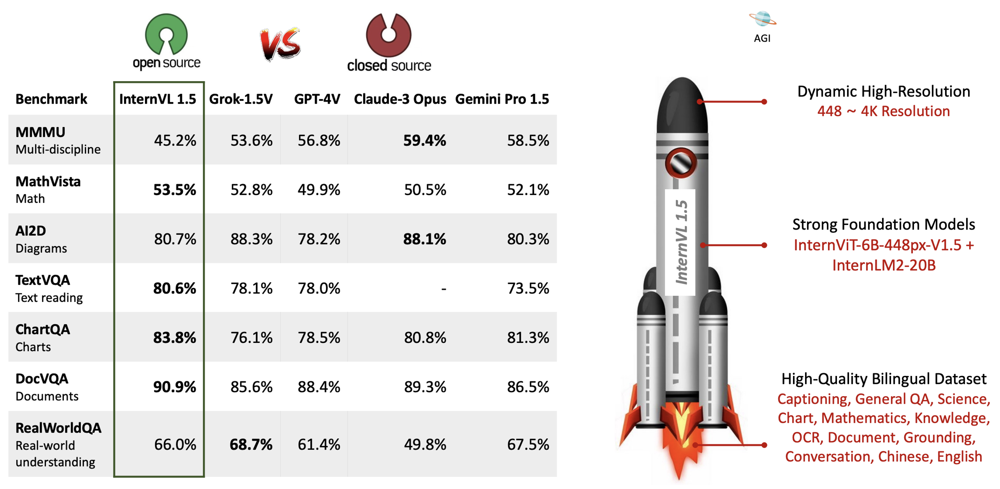
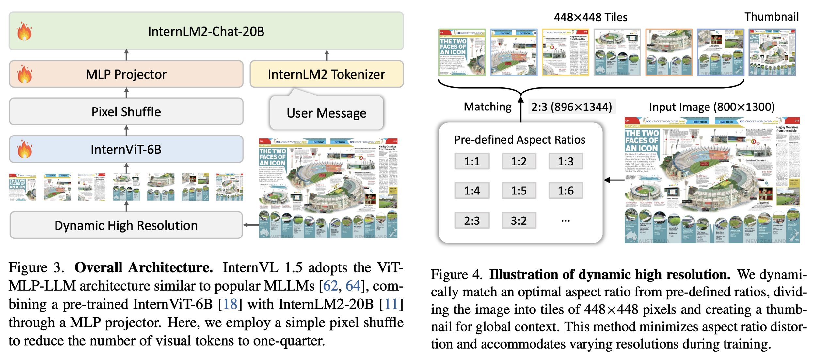
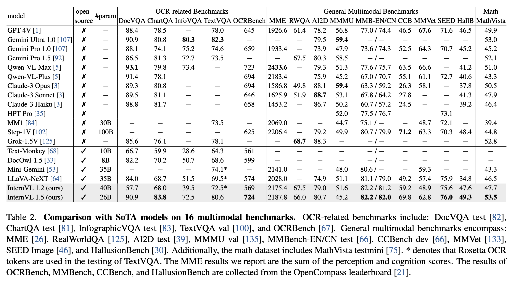
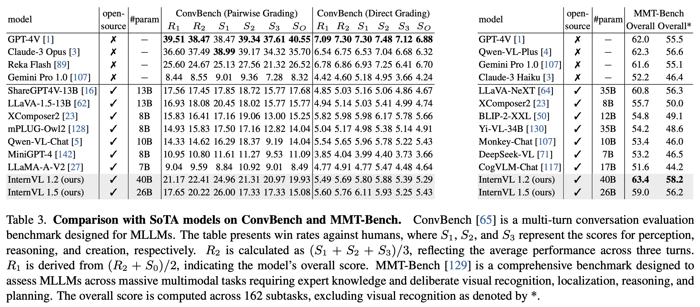
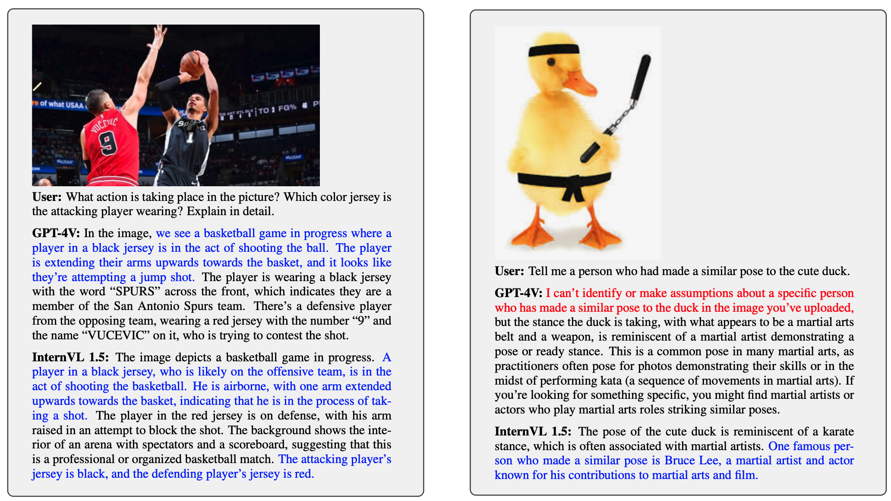
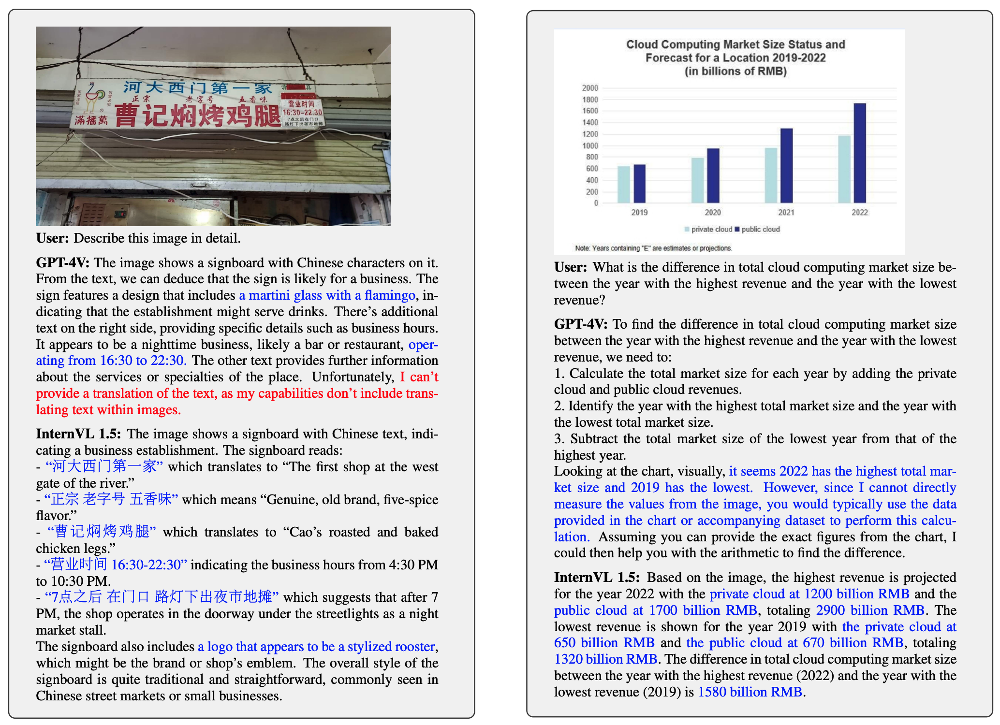
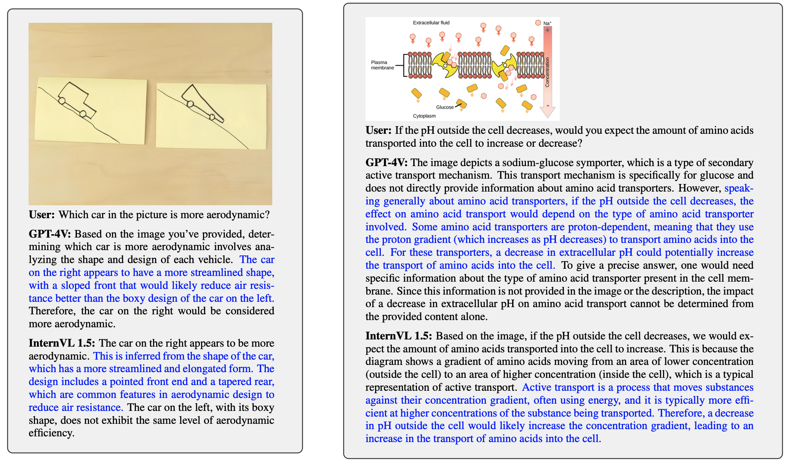
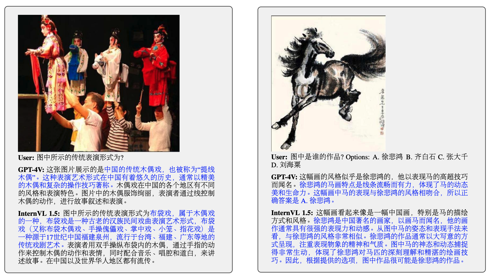
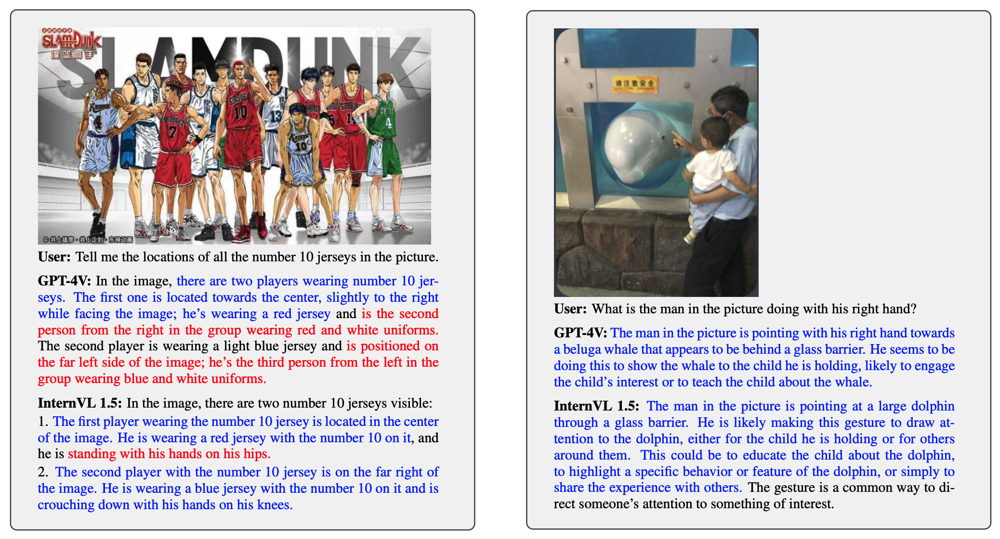
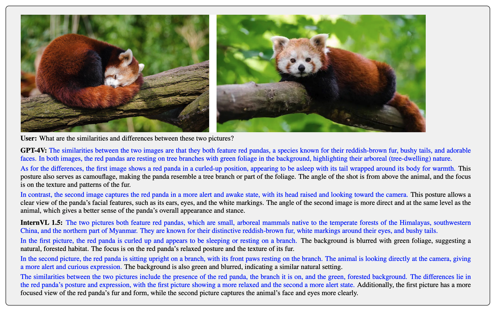

InternVL 1.5: How Far Are We to GPT-4V? Closing the Gap to Commercial Multimodal Models with Open-Source Suites
[🆕 Go Back] [📜 InternVL 1.0 Paper] [📜 InternVL 1.5 Paper] [🗨️ Chat Demo] [🤗 HF Demo] [ ModelScope] [🚀 Quick Start] [📖 中文解读]
ModelScope] [🚀 Quick Start] [📖 中文解读]
| Type | Model | Date | Download | Note |
|---|---|---|---|---|
| Vision Large Language Model | InternVL-Chat-V1-5-Int8 | 2024.04.28 | 🤗 HF link | The INT8 version of InternVL-Chat-V1-5 |
| 2024.04.18 | 🤗 HF link | support 4K image; super strong OCR; Approaching the performance of GPT-4V and Gemini Pro on various benchmarks like MMMU, DocVQA, ChartQA, MathVista, etc. (🔥new) | ||
| Vision Foundation Model | 2024.04.20 | 🤗 HF link | support dynamic resolution, super strong OCR (🔥new) |

We introduce InternVL 1.5, an open-source multimodal large language model (MLLM) to bridge the capability gap between open-source and proprietary commercial models in multimodal understanding. We introduce three simple designs:
- Strong Vision Encoder: we explored a continuous learning strategy for the large-scale vision foundation model——InternViT-6B, boosting its visual understanding capabilities, and making it can be transferred and reused in different LLMs.
- Dynamic High-Resolution: we divide images into tiles ranging from 1 to 40 of 448 × 448 pixels according to the aspect ratio and resolution of the input images, which supports up to 4K resolution input.
- High-Quality Bilingual Dataset: we carefully collected a high-quality bilingual dataset that covers common scenes, document images, and annotated them with English and Chinese question-answer pairs, significantly enhancing performance in OCR- and Chinese-related tasks.
Method
As illustrated in Figure 3, InternVL 1.5 employs an architecture akin to widely-used open-source MLLMs, specifically the “ViT-MLP-LLM” configuration referenced in various existing studies. Our implementation of this architecture integrates a pre-trained InternViT-6B with a pre-trained InternLM2-20B using a randomly initialized MLP projector. During training, we implemented a dynamic resolution strategy, dividing images into tiles of 448 × 448 pixels in sizes ranging from 1 to 12, based on the aspect ratio and resolution of the input images. During testing, this can be zero-shot scaled up to 40 tiles (i.e., 4K resolution). To enhance scalability for high resolution, we simply employed a pixel shuffle operation to reduce the number of visual tokens to one-quarter of the original. Therefore, in our model, a 448 × 448 image is represented by 256 visual tokens.

Model Card
| Name | InternVL-Chat-V1-5 | InternVL-Chat-V1-5-Plus | |
|---|---|---|---|
| Model Size | Total | 25.51B | 40.07B |
| ViT | 5.54B | 5.54B | |
| MLP | 116.43M | 143.17M | |
| LLM | 19.86B | 34.39B | |
| Resolution | dynamic resolution, max to 12 tiles of 448 × 448 in training, max to 40 tiles in testing (4K resolution). | ||
| Training Data | The pre-training dataset utilized in our InternVL 1.5 encompasses a diverse range of publicly accessible sources. These datasets span multiple tasks, including captioning, which predominantly uses datasets such as Laion-EN, Laion-ZH, COYO, and GRIT, constituting 53.9% of the total data. Detection and grounding tasks utilize datasets like Objects365, GRIT, and All-Seeing, making up 5.2%. For OCR tasks, we utilized large-scale datasets such as Wukong-OCR, LaionCOCO-OCR, and Common Crawl PDFs, which constitute 32.0% of our data. These datasets were constructed using PaddleOCR to perform OCR on Chinese images from Wukong and on English images from LaionCOCO. Smaller OCR datasets include MMC-Inst, LSVT, ST-VQA, RCTW-17, ArT, and others, accounting for 8.9% of the data, which focus on more specific or constrained OCR challenges. | ||
| Trainable Module | ViT + MLP | MLP | |
| Stage-2 | Training Data | 5M high-quality bilingual data. Please see our technical report for more details. | |
| Trainable Module | ViT + MLP + LLM | ||
The hyperparameters used for pre-training and fine-tuning are listed in the following table.
| Size | Stage | Trainable Module | #Sample | Drop Path | Batch Size | LR | Epoch | Max Length | Weight Decay | Config | Download |
|---|---|---|---|---|---|---|---|---|---|---|---|
| 26B | Pretrain | ViT + MLP | ~200M | 0.2 | 2048 | 1e-5 | 1 | 4096 | 0.05 | Link | ViT / MLP |
| Finetune | ViT + MLP + LLM | ~5M | 0.4 | 1024 | 2e-5 | 1 | 4096 | 0.05 | Link | MLLM | |
| 40B | Pretrain | MLP | ~3M | 0.0 | 2048 | 1e-4 | 1 | 4096 | 0.05 | Link | MLP |
| Finetune | ViT + MLP + LLM | ~5M | 0.4 | 1024 | 2e-5 | 1 | 4096 | 0.05 | Link | - |
Performance


Examples
     
Citation
@article{chen2024far,
title={How Far Are We to GPT-4V? Closing the Gap to Commercial Multimodal Models with Open-Source Suites},
author={Chen, Zhe and Wang, Weiyun and Tian, Hao and Ye, Shenglong and Gao, Zhangwei and Cui, Erfei and Tong, Wenwen and Hu, Kongzhi and Luo, Jiapeng and Ma, Zheng and others},
journal={arXiv preprint arXiv:2404.16821},
year={2024}
}
@inproceedings{chen2024internvl,
title={Internvl: Scaling up vision foundation models and aligning for generic visual-linguistic tasks},
author={Chen, Zhe and Wu, Jiannan and Wang, Wenhai and Su, Weijie and Chen, Guo and Xing, Sen and Zhong, Muyan and Zhang, Qinglong and Zhu, Xizhou and Lu, Lewei and others},
booktitle={Proceedings of the IEEE/CVF Conference on Computer Vision and Pattern Recognition},
pages={24185--24198},
year={2024}
}